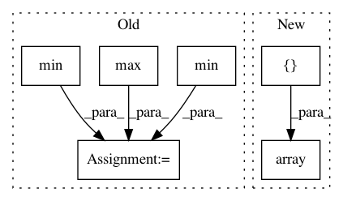

b67ace1dca1e2fd6511ef6e05923762b1b569b1d,dipy/align/tests/test_imwarp.py,,test_em_2d,#,674
Before Change
moving = data[:,:,33]
moving = (moving-moving.min())/(moving.max() - moving.min())
static = (static-static.min())/(static.max() - static.min())
//Configure the metric
smooth=25.0
inner_iter=20
After Change
2, smooth, inner_iter, q_levels, double_gradient, iter_type)
//Configure and run the Optimizer
opt_iter = [10, 20, 40]
optimizer = imwarp.SymmetricDiffeomorphicRegistration(metric, opt_iter)
mapping = optimizer.optimize(static, moving, None)
energy_profile = np.array(optimizer.full_energy_profile)
if floating is np.float32:
expected_profile = np.array([ 5.07521038, 3.85801816, 3.62394243, 3.34811198,
3.00624034, 2.72018113, 2.63478592, 2.7936472 ,
In pattern: SUPERPATTERN
Frequency: 3
Non-data size: 6
Instances
Project Name: nipy/dipy
Commit Name: b67ace1dca1e2fd6511ef6e05923762b1b569b1d
Time: 2014-04-13
Author: jomaroceguedag@gmail.com
File Name: dipy/align/tests/test_imwarp.py
Class Name:
Method Name: test_em_2d
Project Name: nipy/dipy
Commit Name: b67ace1dca1e2fd6511ef6e05923762b1b569b1d
Time: 2014-04-13
Author: jomaroceguedag@gmail.com
File Name: dipy/align/tests/test_imwarp.py
Class Name:
Method Name: test_cc_2d
Project Name: has2k1/plotnine
Commit Name: d695f661f194ba222386ac4848ac259814de3e49
Time: 2014-04-29
Author: has2k1@gmail.com
File Name: ggplot/geoms/geom_abline.py
Class Name: geom_abline
Method Name: _plot_unit